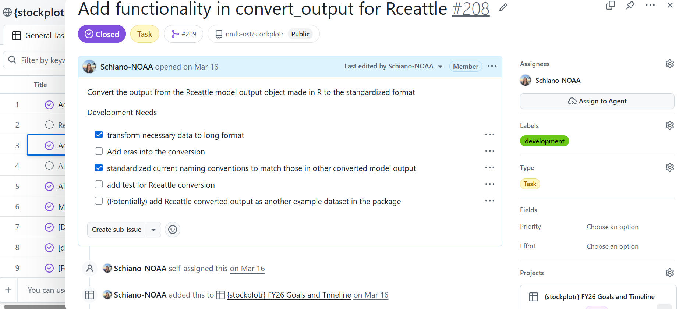

Collaboration
Team
While we meet weekly, occasionally extra or more focused co-working meetings are necessary. A one off meeting can be set for any length of time, but typically one hour is enough to finish the task at hand. This frequently occurs when the team is working on a bug or close to finishing a new feature.
Communication can vary, but is often through Google chat (gchat). Please be aware of everyone’s working hours and that gchats will disappear after 24 hours. We will use email when we need to communicate with other members of the team outside of their working hours. There are benefits to both communication channels, so gchat is best for quick response while email is used to communicate needs and awareness of things as well as maintain a paper trail for needed information.
Email communication can also be used when a team member is needed for review of documents or code such as, but not limited to, abstract submissions, papers, or other important docs that would be reviewed outside the team.
Non-Team
The workflows team maintains communications with a variety of groups in order to (1) reduce duplication of work and (2) ensure that the team is aware of other ongoing projects and their progress that links to the workflows project. This includes, but is not limited to, the following groups:
- SIS (Species Information System)
- NSAP (National Stock Assessment Program)
- FIMS (Fisheries Integrated Modelling System)
- surveys team reps
GitHub and Code Review
A pull request (PR) is opened for each new feature into a GitHub repository. The title of the pull request should follow the same format as the issue title using release indicators to identify what the PR is primarily doing, “[indicator]: title”. The release indicator is important for creating release notes at the end of the month. The description should include a summary of the feature, any relevant information. Please link the issue if there is one that this PR is resolving.
The pull request should be assigned to a team member who is responsible for reviewing the code. The reviewer should ensure good practices are followed, checks and tests on GitHub are successful, and the feature works as intended. Usually, the reviewer would run the functionality on their local computer to confirm. Once the review is completed, the reviewer should select one option from the “Submit Review” drop down menu with their comment(s): “Comment”, “Approve”, “Changes Requested”. We typically use the acronym “LGTM” (looks good to me) when no changed are needed and no additional comments are necessary. The developer who opened the PR is responsible for addressing all comments the reviewer left and determining if anything needs to be addressed. The developer should merge afterwards as long as no changes were requested otherwise the developer should ping the reviewer once more.
Versioning and Releases
We follow semantic versioning of v
- v = version
- First decimal = major release (not backwards compatible)
- Second decimal = minor release (new features)
- Third decimal = hotfixes and bug fixes (patches)
v
Non-stable releases should be denoted with -alpha, -beta, and -rc. An alpha pre-release may not contain all the features planned for the final release, but at the end of the alpha phase, the software is feature complete. Proprietary software do not release their alpha-pre releases to the general public unlike open source software. Beta pre-relase phase starts when the features are complete but the software has bugs. This is pre-released in the open source community for bug testing. Release candidate (rc) pre-release has the potential to be stable.
After every release, the first new merge into main should increment the version to a .9000.
Release schedule:
- Hotfixes and bug fixes can be released at any time and will add one number higher in the third decimal in version but should be tagged and released regardless of complexity
- A feature based release should occur approximately monthly but essentially when a major feature or group of related features are complete to prevent features from sitting for too long between releases
- Use branch with minor release number to indicate next release
- We’re no longer using the following process: make a feature branch based on a “dev” branch; request review of feature branch; merge approved feature branch into dev branch; ultimately, merge dev branch into main branch. Instead, we typically make feature branches off of the main branch.
- We should, generally, not be waiting to release extremely large features once they are finished and instead we should focus on minimal viable products going into main as soon as they can
- Each feature should increase the minor release number by one and will be tagged and released as such
- Releases notes will be put out to users once a feature or group of features is ready to be released out of alpha
- Major releases should only happen when package-breaking features are added that are not backwards compatible
- Any true hotfixes to the code will need to be applied to each major release (i.e. v1.0.x, v2.0.x, ect) up to a specified number of backwards compatible releases.
Planning
Annual
An annual planning meeting is held every year right before the start of the new federal calendar year. To be safe, this meeting should be held close to, but before October 1st in case there is a lapse in federal appropriations. This meeting consists of developing the following:
- revisiting the previous GitHub projects
- Creating a new GitHub project for each package
- Developing and prioritizing features and other goals for the next year
- Creating draft milestones
When creating a new GitHub project, there are tasks specific to each package. Each task should start with a release indicator in square brackets followed by the title (i.e. “[feat] my new feature”). In the case a feature or task is relevant to each package, then the task is duplicated. Descriptions and relevant information is added to each task (see image below for example). The team will then prioritize the tasks and assign them to team members. The team will also add target dates and milestones to each task.

GitHub Projects
Each project should be titled according to the target year and package (i.e. “{stockplotr} FY26 Goals and Timeline”). The headers columns contain:
- title - task/feature
- assignees - selected person responsible for development
- status - current status of the task, options include: Todo, In progress, In review, Blocked, and Done
- target date - the date by which the task is expected to be completed
- linked pull request (automatic)
- notes - any information helpful to the task, but not relevant to include in the description
- priority - high, medium, low, parking lot
Most tasks will be made in the project as “draft issues” meaning that they will not appear in the issues page until opened. Every month the project lead will go through the tasks in the GitHub project and open the ones planned for that month. This approach reduces the number of issues and allows us to view and prioritize issues that are submitted by users. All GitHub projects should be made public in order to keep to open science principles and allow users to see what features are planned for the coming year.
When setting target dates and deadlines, keep in mind that tasks will almost always take longer to complete than intended. This is primarily due to concurrent development of multiple features, dealing with bug fixes, providing support to users, and many other offshoot priorities. A good rule of thumb is for larger features, set the target date for a month from when development should start, then add 2 weeks. This could provide enough time for both development and review.
Milestones
Milestones are used for the team and NOAA leadership. They contain high-level and detailed overviews for that milestone. Milestones can be made monthly or quarterly with one off milestone such as “High Priority figures” or some type of grouping. The important piece to consider is that milestones are a general summary of what we want to develop and its importance. Issues in GitHub are linked to milestones to provide line-by-line details.
Steering Committee
While we have a separate section describing the roles and responsibilities of the steering committee along with how it is organized, it is important to touch on how the workflows team handles planning and organization of the steering committee. Before each meeting, the workflows team sets aside time during the weekly check-in meeting to plan the steering committee meeting for that month. This can either be the week beforehand or the day of. Usually we are able to pull ideas or planned topics from the “Future Topics” subheading in the meeting notes doc or have an idea of feedback we need to gather.
In the case there are no timely planned topics or is no need for feedback, we will cancel the meeting. This rarely occurs, but can happen from time to time. The meeting can also be cancelled for low attendance particularly in summer or around the winter holidays when many steering committee members are taking leave.